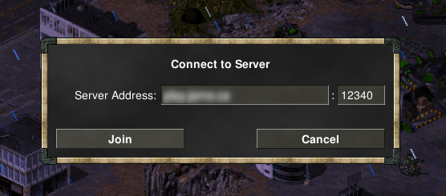

You will have to expand "Assets" to see the download links.
To set your in-game name, click on "Settings". You'll be able to set your name under "Player Name".
From the main menu, click on "Multiplayer" and then click on "Direct IP". Fill in {{ site.content.domain_name }} and set the port at 12340. The standard port is 1234, but is already taken. Then click on "Join"
You will be placed in the lobby with the other players